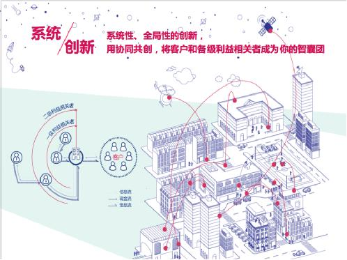

TIME
2016Y 10M 18D
数字经济时代，实体与虚拟经济融合成为趋势。该如何创造更有意义的实体及数字化体验，如何从文化组织及社会层次上进行创新，是企业面临并急需解决的关键问题。
围绕这一话题，以新思维新技术驱动企业创新的NPLUS Digital携手基于“大设计”的创新战略咨询公司桥中， 于10月18日在上海举办了一场享悦新灵感的私密派对——“烤羊腿之夜”。来自营销传播、设计、地产、能源、教育、母婴等行业的20余位企业高管嘉宾受邀参加，与两大创新咨询机构的专业团队一起分享洞见、解析趋势、探索企业创新的全新路径。
桥中总经理李欣宇：未来组织的核心是赋能
桥中总经理 李欣宇
桥中 (CBi China Bridge) 是中国颇具实力的创新设计公司，秉承“创新赋能，设计落地”的理念，致力于帮助客户打造创新型的组织架构和企业文化；品牌、服务和产品的战略、战术及设计落地。此次桥中总经理李欣宇作为演讲嘉宾，以“人”的体验和创新能力建设为出发点，提出价值创新导向的设计思维模型及其发展路径，重新定义公司，强调“未来的组织的核心是赋能”：

第一个能力，是系统创新的能力。 作为一个企业管理者和经营者，必须要清晰的知道处于的生态圈是什么样子。所谓“无破界，不生态”，你如何去考虑全局型，系统性的创新？在这个城市中，你面对的客户是谁？都有哪些利益相关者和你发生的联系，你的商业逻辑是什么？如何用协同共创的方式把客户和你的利益相关者变成你的智囊团？这样的一个生态系统，有无限的创新设计机会。
第二个能力，是服务设计的能力。怎样和用户互动？这里包括了服务前，服务中和服务后。服务前了解你的用户，让他们产生消费需求，通过品牌推广，增加用户的认知；服务中就是和用户交互，设计好的用户体验；而服务后则是如何和用户二次连接，培养他们的忠诚度。
第三个能力是触点的设计能力。这里面包括了人，空间和产品。比如一个产业园区，其中展厅空间就是一个触点；服务人员提供服务，这也是触点；数字显示屏也是触点。单点要极致，但是如何把这些散落的点像串珠子一样串起来，展示统一的品牌形象，如何去和系统设计，组织设计和用户体验设计连接， 这是作为一个设计战略者需要思考的。”
李欣宇还分享了价值创新导向的设计思维模型，“公司的进化，慢慢的不再是公司+雇员，而是平台+个人。当创新思维开始进入组织的中心甚至是各个角落的时候，一个组织就像这样一朵盛开的向日葵，而每一个小团队就像是向日葵的花瓣。平台越来越强大，公司小团队就越来越小，越来越多。一个公司未来的架构，可能就是一个强大的平台。而每一个小团队，也如同G20开幕式的天鹅湖舞蹈团，有领舞和伴舞，在这个团队是领舞，可能同时在另外一个团队又是伴舞。小团队和小团队之间是流动的，互动的。他们在组成一起，叫动态流舞蹈团，英文名字叫做DFDT, Dynamic flow dancing team. ”
NPLUS Digital恩普勒斯数字营销咨询CEO韩笑：独乐乐不如众乐乐
NPLUS Digital首席执行官韩笑，从商业的视角，全面解析客户需求、消费行为及价值观、客户关系管理在由大众传播到精准营销时代的发展变化，重新思考、诠释商业价值。
这是一个混合商业的时代，任何传统行业都可能被异军突起的外行业创新者所颠覆或者被重新定义；这是一个以用户为中心的时代，单一的商品和服务很难满足用户的需求 。今天的顾客，我们不能再用简单的统计数据、随机身份和一次、两次焦点访谈来定义他们。男女以及年龄等统计数据并不重要，购买动机、消费行为习惯以及兴趣爱好才是关键。
“技术给内容带来了新的形态、商业模式、变现方式、和新的市场外延，让营销传播更加灵动且有场景感。数字时代，内容的首要属性应该是产品性，能否接受用户反馈，快速迭代。从这个角度来理解，未来所有企业都是内容企业——品牌成为开放的媒体平台，产品和用户本身就是最好的传播渠道。品牌能否直达人心，深度解读并管理多重关系至关重要。
在以人为核心的时代，一个新的商业变迁趋势是从在线商业模式向社交商业模式的转变。首先，社交连接技术能力的不断发展，让企业自媒体成为连接消费者的核心。这种社交连接技术所能产生的价值，必然会推动商业模式转型，充分利用社交沟通所能够给企业和消费者关系之间带来的新的沟通方式：一对一、个性化、自动化和智能化。
其次，消费者的自媒体，正在变成企业最重要的媒体资源。社交技术把过去高高在上或者有规模优势的媒体，进一步的碎片化了。每个普通消费者都是兼具收入贡献价值和媒体贡献价值的双重身份。单个消费者的媒体价值，虽然看上去零散、简陋、难以管理，但是对于消费者自媒体覆盖的范围而言，这个媒体的可信度高、易于互动、转化率高。对于一个企业来说，自身的粉丝规模和发动粉丝后形成的网络规模相比，后者往往在规模上和转化率上远高于前者。
再次，商业和生产力发展的阶段，导致消费者对消费价值取向发生了重大的变化。物质选择上更加富足的消费者，对于消费本身的乐趣，已经从“买到”（可获得性），到“买好”（性价比、选择的乐趣），再到正在大规模普及的“买好玩”（消费的意义不在于消费的内容，而在于消费的动机、消费过程的体验和消费后附加的价值）。理解这个逻辑，才能真正明白所谓粉丝经济、打赏经济和社群经济的实质消费心理，并且敢于相信这个趋势只会迫使各行各业去给消费者提供更加丰富的社交购买动力，而没有其他选择。
最后，社交商业，不是在社交媒体上嫁接电商，或者在电商平台上添加社交功能这么简单。社交商业的概念和逻辑，本质上不是一个平台级的概念，而是一个企业级的概念。因此，无论是多么强大的平台，简单的希望通过平台产品机制的改变，来赋能平台上的企业进入社交商业的模式，逻辑上都是难以成立的，实践中也没有人成功。社交商业时代的来临，其核心推动作用的，很可能并不是超级平台，而是类似于像计算机普及时代的IBM或者微软这样的超级赋能者。
NPLUS Digital的存在，也正是迎合了社交商业模式变革的趋势。作为助力传统企业实现互联网+创新转型的数字营销咨询及移动互联网技术解决方案提供商，NPLUS以营销传播新格局挑战传统4A运营模式，满足品牌深度整合的需求，实现由单点创意到团队群体协作的升级，用技术产品化减少对人的依赖，最终为品牌提供3C服务——品牌共建者 (Creator)，专业咨询者 (Consultant)，资源协调者 (Coordinator)。”
桥中洞察与创新总监诸俊怡：创新方法3大基石——定性研究，协同共创，设计师的力量
桥中洞察与创新总监 诸俊怡
为什么要谈创新方法？中国用了35 的时间走完了西方200年的道路。在这35年中，很多商业的成长都是基于拿来主义的。现在中国消费者的需求已经走在时代尖端，我们企业自身的水平也已经非常领先。市场环境变化迅速，拿来主义时代可能已经临近尾声。
那么我们谈创新方法的时候在谈些什么？其实是一种属于每个人的创新思路和方法，能够迅速而便宜的失败，有据可循的成功。它有三个重要的基石：定性研究，协同共创，以及设计师的力量。创新重要的是考虑各个方面的界限，提出变革性的问题，而不是天马行空的想法；团队里每个人都能够同时充当思想家、创新家和评审。在这样的状态下，可以最大程度的节省时间成本，直接将概念输入市场做量化验证，为未来的创新项目团队培养人才，并且真正实现创新共享。”
NPLUS Design创始人兼总监李艾军：新思维、新技术，重新定义设计表达
NPLUS Design创始人兼设计总监李艾军
NPLUS Design创始人兼总监李艾军将跨界思维和互联网思维平移到设计领域，在行业内首次提出W.VI的概念。
随着技术的不断更新发展，互动呈现形式越来越多元，设计和技术边界越来越模糊，传统单一的视觉表达，已经不能很好满足当下用户需求，我们需要思考的是如何通过设计和技术更好的融合，来满足品牌在不同场景下的内容表达。
拿品牌识别VI来举例，传统的VI浏览成本较高，文件传输率较低，修改拓展成本也较高,W.VI最大的优势是能够优化传统设计使用场景及操作体验，浏览器成本相对较低，便于使用管理。
与传统广告设计公司不同，NPLUS Design为品牌提供多元化、动态化、灵活化、多屏化、可量化的品牌视觉呈现。除品牌设计外，NPLUS Design的服务还包括界面设计＋前端编码实现，真正实现互联网＋下的创意设计表现。
活动在喷香的烤羊腿和活跃的探讨、互动中结束。创新的话题总是能激荡出不同层次的思考涟漪。可以预见的是，新思维、新技术、新设计，定将驱动企业创新三足鼎立的新纪元！